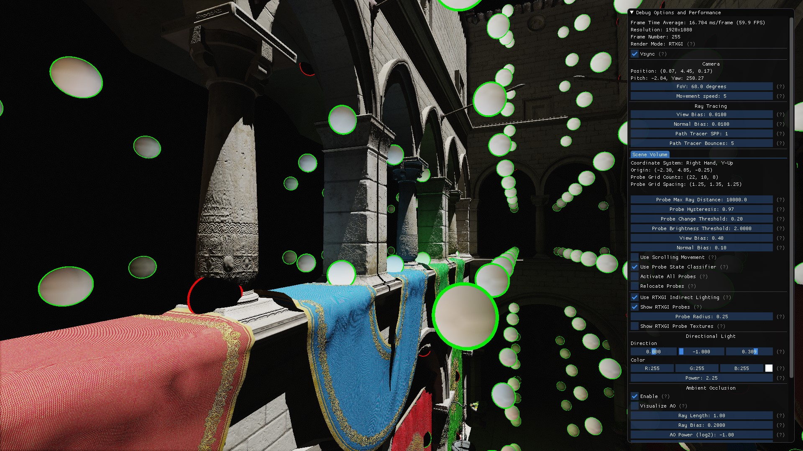
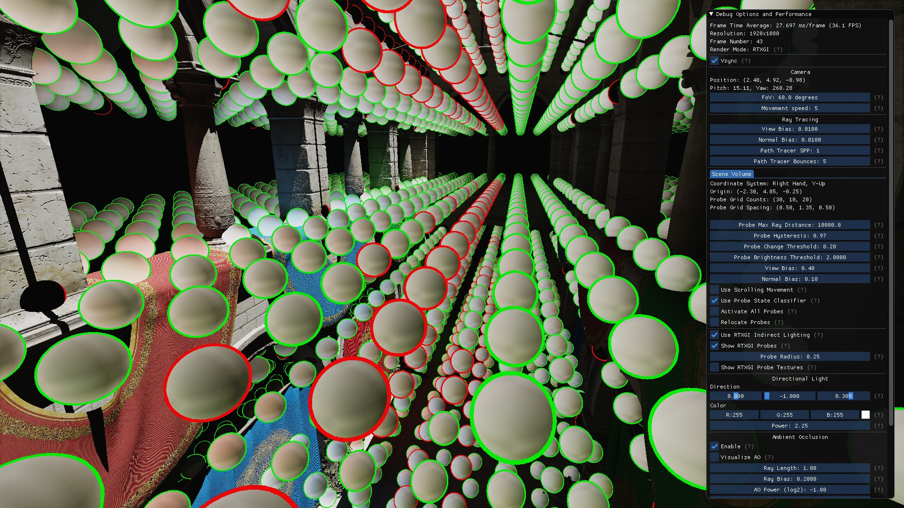

Dynamic Diffuse Global Illumination¶
Dynamic Diffuse Global Illumination (DDGI) is a global lighting algorithm that extends the traditional pre-computed irradiance probes approach. Lighting techniques built on traditional irradiance probes are commonly used today in real-time rendering (see popular commercial products and engines such as Enlighten, Unity, and Unreal Engine); however, these irradiance probe solutions are unable to resolve the visibility of dynamic scene elements at runtime. The DDGI algorithm removes this restriction by employing GPU ray tracing and a fast probe update scheme to maintain per-probe irradiance and distance data at runtime for static and dynamic objects.
Similar to traditional irradiance probes, DDGI does not solve the complete global illumination problem, and is best used for the diffuse irradiance component of the full lighting equation. As a result of the underlying probe based data structure, the computed diffuse irradiance is inherently low frequency and can not capture fine high frequency occlusion details. For this reason, DDGI combines effectively with complimentary rendering techniques such as Ray Traced Ambient Occlusion (RTAO). To demonstrate this, RTAO is implemented and combined with DDGI in the Test Harness sample application. Head over to the Harness section to learn more.
The remainder of this documentation focuses on the implementation of DDGI provided in this SDK. More information about Dynamic Diffuse Global Illumination can be found in the academic publication and NVIDIA’s GDC 2019 “Dynamic Diffuse Global Illumination with Ray Traced Irradiance Fields” talk.
Usage Overview¶
The computation of diffuse global illumination using the DDGI algorithm in this SDK is supported inside volumes of user defined size. This is functionality provided by the DDGIVolume class, and supported by various helper functions in the rtxgi namespace.
The basic use pattern of a DDGIVolume for dynamic global illumination is as follows:
Create one or more
DDGIVolume(see Volumes).Each Frame:
Call
DDGIVolume::Update(...)Note: this function call updates the volume’s random sampling pattern and constant buffer (see Updating a Volume).
Trace rays for the volume’s probes (see Probe Ray Trace).
Call
DDGIVolume::UpdateProbes(...)Note: this function call updates the irradiance and distance values for all probes in the volume based on the results from ray tracing (see Probe Irradiance and Distance Update).
Sample the diffuse irradiance at a point in the
DDGIVolumewith theDDGIGetVolumeIrradiance(...)HLSL function, and composite with direct illumination (see Computing Indirect Lighting from a Volume).
Destroy the
DDGIVolumeon shutdown (see Destroying a Volume).
Note
The Test Harness sample application implements the process described above in samples/test-harness/src/harness/main.cpp. The frame loop of Step 2 is implemented in the following places:
Line 226: volume->Update(...)
Line 234: Harness::RayTraceProbes(...)
Line 244: volume->UpdateProbes(...)
Line 295: Harness::RenderIndirect(...)
There are several alternate ways a DDGIVolume may be used, depending on the constraints and performance requirements of the application and target platform. For example, one could create a volume and run a number of ray tracing iterations and probe updates at level load time to bake the current lighting conditions into the volume. This approach is not as dynamic as the pattern described above, but it eliminates the common practice of pre-computing several sets of probe irradiance textures for scenarios such as time of day changes at level transitions. This can result in substantial storage savings, and lighting that more accurately matches the time of day. This pattern is implemented as follows:
Create one or more
DDGIVolume(see Volumes).For N iterations (e.g. at level load or map transition)
Call
DDGIVolume->Update(...)Trace rays for the volume’s probes (see Probe Ray Trace)
Call
DDGIVolume->UpdateProbes(...)Level Load / Map Transition Completes
Each Frame:
Sample the diffuse irradiance at a point in the
DDGIVolumewith theDDGIGetVolumeIrradiance(...)HLSL function, and composite with direct illumination (see Computing Indirect Lighting from a Volume).Level Load / Map Transition initiated. Go back to Step 2.
Configuration¶
The configuration of the DDGI implementation is primarily controlled through a set of defines found in rtxgi-sdk/include/rtxgi/ddgi/DDGIVolumeDefines.h. These defines are alsodiscussed in the relevant sections of this document. The following table provides an overview:
Setting |
Description |
More details |
|---|---|---|
|
Set to 0 for the application to manage resources, and 1 for the SDK to manage resources. |
|
|
Set to 0 for radiance textures to use the |
|
|
Set to 0 for irradiance textures to use the |
|
|
Set to 0 for offset textures to use |
|
|
Set to 1 to use shared memory optimizations in the probe radiance and distance blending shaders. |
|
|
Set to 1 to visualize probe indices for debugging. Requires |
|
|
Set to 1 to override irradiance textures with debug coloring that visualizes probe octants. |
|
|
Set to 1 to override irradiance textures with debug coloring that visualizes probe border copy indexing. |
|
|
A define used by the host application. Set to 1 to enable using DDGI to compute irradiance. See |
|
|
A define used by the host application. Set to 1 to enable using DDGI to compute irradiance recursively for probe rays. See |
|
|
Set to 1 to enable Probe Relocation. |
|
|
Set to 1 to enable Probe Classification. |
|
|
Set to 1 to enable Infinite Scrolling Volume Movement. |
Note
Some of these configuration options are only used in the Harness, but are provided in the SDK for convenience.
Shaders¶
In addition to host side source code, the necessary DDGI shader code is provided in rtxgi-sdk/shaders/ddgi. The following table provides a brief description of each shader file:
File Name |
Description |
|---|---|
|
Contains commonly used probe indexing, octahedral indexing, ray generation, and probe relocation/classification functions. This file can be included anywhere, since all resources are passed through function parameters. |
|
Contains the helper functions used when sampling irradiance for arbitrary points in a |
|
Compute shader code that blends radiance or distance values into the appropriate octahedral texture map. All probes of a volume are processed in parallel. This shader is dispatched by the |
|
Compute shader code that updates the 1-texel border of irradiance or distance octahedral texture maps. All probes of a volume are processed in parallel. This shader is dispatched by the |
|
Compute shader code that attempts to reposition probes if they are inside of geometry (e.g. walls). This shader is dispatched by the |
|
Compute shader code that classifies probes into various states for performance optimization. See Probe State Classification. |
Volumes¶
A DDGIVolume is a volume of space within which irradiance queries at arbitrary world-space points are supported. The underlying data structure of a DDGIVolume is a regular grid of probes (see the note below) that spans a volume’s extent, and is centered about a user defined volume origin. A DDGIVolume may cover the entire scene or some sub-volume of the scene, depending on the desired effect. Each probe is represented by an unwrapped octahedral texture map of irradiance and distance values for the set of directions around that probe (also referred to as an irradiance field). At a high level, the DDGIVolume provides the ability to:
Update the per-probe irradiance and filtered distance values
Compute the irradiance for arbitrary world-space locations within the volume
Before creation, a DDGIVolume is described using a pair of descriptor structs that configure the various properites and resources of the volume. These structs are DDGIVolumeDesc and DDGIVolumeResources.
Note
A regularly spaced probe grid is not strictly required. The probe grid can be adjusted using the per-probe offsets that are part of the Probe Relocation and Position Optimization feature.
Describing a Volume¶
The DDGIVolumeDesc is a descriptor structure that specifies the attributes of a DDGIVolume.
This structure is defined in rtxgi-sdk/include/rtxgi/ddgi/DDGIVolume.h and each member variable is described in the table below:
Member |
Type |
Description |
|---|---|---|
|
|
The name of the volume. |
|
|
The world-space origin of the volume. |
|
|
The world-space distance between probes. |
|
|
The number of probes on each axis (x, y, z). |
|
|
The maximum distance a ray cast from a probe may travel. |
|
|
Controls the influence of new rays when updating probes. A value close to 1.0 slowly changes probe data, improving stability but reducing accuracy when objects move in the scene. Values of 0.9 or lower will rapidly react to scene changes, but may cause flickering or other instabilities in lighting. |
|
|
A ratio used during probe radiance blending. Specifies a threshold to identify when large lighting changes occur. When the difference in the maximum color components between the previous and current irradiance is larger than this threshold, the hysteresis will be reduced. |
|
|
A threshold value used during probe radiance blending that determines the maximum allowed difference in brightness between the previous and current irradiance values. This prevents impulses from drastically changing a texel’s irradiance in a single update cycle. |
|
|
The exponent used during visibility testing. A high value rapidly reacts to depth discontinuities, but may cause banding. |
|
|
An exponent that perceptually encodes irradiance for faster light-to-dark convergence. (See Probe Irradiance Gamma). |
|
|
The number of texels in one dimension of the probe irradiance texture (octahedral maps are square), not including the 1-texel border. |
|
|
The number of texels in one dimension of the probe distance texture (octahedral maps are square), not including the 1-texel border. |
|
|
The number of rays to cast per probe. When using |
|
|
A small offset along the camera view ray applied to the shaded surface point to avoid numerical instabilities when determining visibility. |
|
|
A small offset along the surface normal applied to the shaded surface point to avoid numerical instabilities when determining visibility. |
|
|
The minimum distance allowed to a front facing triangle before Probe Relocation moves the probe (see Probe Relocation and Position Optimization). |
|
|
The ratio of rays cast for a probe that may hit back facing triangles before Probe Relocation and State Classification assume the probes is inside of geometry (used by Probe Relocation and Position Optimization and Probe State Classification). |
|
|
The mode of movement used for the volume. Can be either |
|
|
The probe grid-space offsets used for scrolling movement. |
Octahedral Texture Maps
Octahedral Texture Maps are unwrapped as described in Cigolle et al 2014. To support fast hardware bilinear texture sampling, our octahedral texture maps include a 1-texel border. These border texels are added to the values specified in the numIrradianceTexels and numDistanceTexels members of DDGIVolumeDesc.

The octahedral parameterization of a sphere unwrapped to the unit square as described by Cigolle et al. 2014¶

Three annotated diagrams of the unwrapped octahedral unit square for a single probe. The left and center diagrams highlight the 1-texel border added to the 6x6 texel interior, and identify the texels that map to the “front” and “back” of the probe. The scheme to populate border texels with the necessary data for bilinear interpolation is shown on the right.¶
Note
The Test Harness application includes a mode to visualize each probe’s unwrapped octahedral texture map at runtime. See Texture Visualization for more information.
Resource Management¶
The DDGIVolume uses a variety of GPU resources. Since applications vary widely in how resource allocation and tracking is handled, two modes are provided for resource management:
SDK Managed: the SDK internally manages the allocation and deallocation of
DDGIVolumeGPU resources.Application Managed: the application manages the allocation and deallocation of
DDGIVolumeGPU resources, and passes resource pointers to theDDGIVolume.
The resource management mode is specified at compile time by setting the RTXGI_DDGI_SDK_MANAGED_RESOURCES define in rtxgi-sdk/include/rtxgi/ddgi/DDGIVolumeDefines.h. Set RTXGI_DDGI_SDK_MANAGED_RESOURCES to 0 for application management or 1 for SDK management.
Descriptor Heap and Constant Buffer(s)
Regardless of the selected resource management mode, the application is responsible for allocating, managing, and providing information about the descriptor heap where the descriptors for DDGIVolume resources are placed. The application provides this information to a DDGIVolume using the DDGIVolumeResources structure at volume creation time. This structure is defined in rtxgi-sdk/include/rtxgi/ddgi/DDGIVolume.h, and the descriptor heap members are described in the table below:
Variable |
Type |
Description |
|---|---|---|
|
|
A pointer to a valid D3D12 CBV/SRV/UAV descriptor heap. |
|
|
The size of each entry on the descriptor heap. |
|
|
The offset to the first free descriptor heap slot a |
In addition to descriptor heap space, the application must allocate a GPU resource for constant buffer data. Unlike the descriptor heap, a resource pointer for the constant buffer is not passed to the DDGIVolume at creation time, and is instead passed through the DDGIVolume::Update(ID3D12Resource*, UINT64) function (see Updating a Volume). In order for the application to know how many descriptor heaps slots to reserve and how many constant buffer bytes to allocate per volume, the following helper functions are available in the rtxgi namespace:
Function |
Description |
|---|---|
|
Get the number of constant buffer bytes required by a |
|
Get the number of CBV/SRV/UAV resource descriptor slots required by a |
Note
To support double (or triple) buffering, the constant buffer should be allocated with a size that is a multiple of the value returned by GetDDGIVolumeConstantBufferSize().
Note
The Test Harness application provides an example that sets the descriptor heap information with the DDGIVolumeResources struct and allocates a constant buffer (for double buffering) in the Harness::CreateVolumeMulti(...) function of samples/test-harness/src/harness/Harness.cpp.
SDK Managed Resources¶
In SDK managed mode, the DDGIVolume creates and manages the necessary GPU resources (except for the descriptor heap and constant buffer as described above), including the root signature, textures, descriptors, and pipeline state objects (PSO). The intent in providing a mode where the SDK manages GPU resources directly is to simplify the resource management process for applications that may benefit from a black box approach. Resources are allocated at volume creation time when calling the DDGIVolume::Create(...) function.
Although the DDGIVolume manages resources in this mode, it does not handle shader compilation since most game engines and renderers already have existing infrastructure for this task. Pointers to compiled DXIL shader bytecode blobs for the blending and update compute shaders (provided in the SDK) must be passed to the volume through the DDGIVolumeResources descriptor struct. These fields are described in the table below:
Variable |
Type |
Description |
|---|---|---|
|
|
The D3D12 device to use for resource allocation. |
|
|
Compiled DXIL probe radiance blending compute shader bytecode. |
|
|
Compiled DXIL probe distance blending compute shader bytecode. |
|
|
Compiled DXIL probe irradiance or distance border row update compute shader bytecode. |
|
|
Compiled DXIL probe irradiance or distance border column update compute shader bytecode. |
|
|
Compiled DXIL probe relocation compute shader bytecode (used for Probe Relocation and Position Optimization). |
|
|
Compiled DXIL probe state classifier bytecode (used for Probe State Classification). |
|
|
Compiled DXIL probe state classifier “activate all” bytecode (used for Probe State Classification). |
Note
Although the SDK does not compile shaders, it will create the appropriate compute pipeline state objects for the shaders in SDK managed mode.
Application Managed Resources¶
For applications that require tighter control over the resource management process, the Application Managed resource mode leaves the task of resource allocation entirely to the host application. Like the SDK Managed mode, resource pointers are provided to the DDGIVolume through the DDGIVolumeResources struct at creation time; however, the application must provide the entire set of necessary GPU resources. These fields are described in the table below:
Variable |
Type |
Description |
|---|---|---|
|
|
A pointer to the root signature for the compute shaders. See |
|
|
A pointer to the probe radiance texture resource (to be used in ray tracing). |
|
|
A pointer to the probe irradiance texture resource. |
|
|
A pointer to the probe distance texture resource. The R channel stores mean distance, the G channel stores mean distance^2. |
|
|
A pointer to the probe relocation world-space offsets texture resource (used in Probe Relocation and Position Optimization). |
|
|
A pointer to the probe state texture resource (used in Probe State Classification). |
|
|
A pointer to the probe radiance blending compute pipeline state object resource. |
|
|
A pointer to the probe distance blending compute pipeline state object resource. |
|
|
A pointer to the probe irradiance or distance border row update compute pipeline state object resource. |
|
|
A pointer to the probe irradiance or distance border column update compute pipeline state object resource. |
|
|
A pointer to the probe relocation compute pipeline state object resource (used in Probe Relocation and Position Optimization). |
|
|
A pointer to the probe state classifier compute pipeline state object resource (used in Probe State Classification). |
|
|
A pointer to the probe state classifier activate all compute pipeline state object resource (used in Probe State Classification). |
Note
In application managed resource mode, a D3D12Device pointer is not passed through the DDGIVolumeResources struct, since all resources are allocated by the host application. As a consequence, pipeline state object resources pointers are passed for each required compute shader instead of compiled DXIL bytecode.
Allocation Helpers
To aid the application in the resource allocation process, the following namespace functions are available in the rtxgi namespace:
Function |
Description |
|---|---|
|
Get the required DXGI_FORMAT of the given texture resource type. |
|
Get the number of probes on the X and Y dimensions of the irradiance and distance textures. |
|
Get the dimensions, in texels, of the given texture type for a |
|
Get the root signature descriptor blob for the given descriptor heap offset. |
|
Get the compacted GPU version of the |
Note
The format of various textures can be changed at compile time (usually for debug purposes) by changing the following defines in rtxgi-sdk/include/rtxgi/ddgi/DDGIVolumeDefines.h:
RTXGI_DDGI_DEBUG_FORMAT_RADIANCERTXGI_DDGI_DEBUG_FORMAT_IRRADIANCERTXGI_DDGI_DEBUG_FORMAT_OFFSETS
See Configuration for more information.
Creating a Volume¶
A minimum of one DDGIVolume is required to use the DDGI algorithm. Volumes are specified as part of the scene, which is left to the host application. A common pattern is for artists and level designers to specify volumes in editor tools that expose RTXGI SDK functionality through their user interface. DDGIVolume parameters are then stored in data files, and used at level load time to instantiate the volumes. Alternatively, a volume may be programmatically generated based on scene parameters (bounding boxes, resolution, etc.).
Assuming the set of desired parameters are available, the volume creation process begins by mapping each parameter into the DDGIVolumeDesc struct (see Describing a Volume for details). Once the volume descriptor has the appropriate parameters, the required volume resources are set in a DDGIVolumeResources struct (see Resource Management for details). After the parameter descriptor and resource descriptor are set up, the DDGIVolume is created using the constructor after which the DDGIVolume::Create(...) is called to finish creating the volume. See the Harness::CreateVolume(...) function in samples/test-harness/src/harness/Harness.cpp for an example.
Note
The Harness provides an example implementation of how to use one or more DDGIVolume to add global illumination to a scene.
Note
While this section focused on creation of a single volume, multiple volumes may be created by repeating the creation process in this section. See Volume Blending for more information on how to use multiple volumes to compute global illumination.
Destroying a Volume¶
When no longer needed, a DDGIVolume and its GPU resources can be released. Regardless of resource management mode (see Resource Management), the host application is responsible for releasing the descriptor heap and constant buffer resources allocated for the volume. In SDK managed resource mode, all additional GPU resources created for a volume are released when DDGIVolume::Destroy() is called. In application managed resource mode, no GPU resources are released when DDGIVolume::Destroy is called, and the deallocation process is left entirely to the host application.
Updating a Volume¶
The DDGI algorithm is referred to as Dynamic Diffuse Global Illumination since it is possible to update irradiance and distance data at runtime. A common update frequency is to update the probes with newly ray traced data every frame; however, this is not the only option. Aternatively, updates could be scheduled at a lower frequency than the frame rate, or even as asynchronous workloads that execute continuously on lower priority background queues - essentially streaming radiance and distance data to DDGIVolume probes.
The set of operations to perform a single update of a DDGIVolume are:
Randomize the sampling rotation and update the constant buffer data by calling
DDGIVolume::Update(...).See
volume->Update(...)insamples/test-harness/src/harness/main.cpp
Trace rays from the
DDGIVolumeprobes and store the radiance and distance results.See
Harness::RayTraceProbes(...)insamples/test-harness/src/harness/main.cpp
Update probe irradiance and distance data based on the ray tracing results by calling
DDGIVolume::UpdateProbes(...).See
volume->UpdateProbes(...)insamples/test-harness/src/harness/main.cpp
Randomizing the Sampling Rotation and Updating the Constant Buffer¶
The DDGIVolume::Update() function randomizes the rotation matrix applied to each probe’s set of ray directions and updates the constant buffer. Well distributed random rotations are computed using James Arvo’s implementation from Graphics Gems 3 (pg 117-120) in the DDGIVolume::ComputeRandomRotation() function. If this step is skipped, the previous rotation and constant buffer state are used, and the same data as the previous frame is unnecessarily recomputed.
Note
The DDGIVolume::Update(...) function accepts a GPU resource pointer to a constant buffer along with a byte offset. The update function calls Map() and applies the byte offset before performing a memcpy(...) and Unmap() on the constant buffer. It is possible to double buffer the constant buffer data by swapping byte offsets each time DDGIVolume::Update is called. The Test Harness provides an example of this in samples/test-harness/src/harness/main.cpp.
Probe Ray Trace¶
After updating the constant buffer data, the application is expected to perform ray tracing for probes in the DDGIVolume to estimate the incoming irradiance and distance to geometry in all directions around each probe. This can be accomplished a number of ways, and for flexibility the SDK leaves this task to the host application. Regardless of how ray tracing is implemented, a set of ray directions for the volume’s probes must be computed. rtxgi-sdk/shaders/ddgi/ProbeCommon.hlsl provides the DDGIGetProbeRayDirection(...) utility function that computes a set of unique, low discrepancy, spherically distributed directions on the unit sphere that apply the randomly rotation transform computed by DDGIVolume::Update(...). This function should be used to generate probe ray directions before ray tracing.
Note
An example of this is provided in the Harness::RayTraceProbes(...) function of the Test Harness in samples/test-harness/src/harness/Harness.cpp, and RayGen() HLSL entry point of the samples/test-harness/shaders/ProbeTraceRGS.hlsl DXR ray generation shader.
Note
Higher ray counts per probe increase the rate of convergence and produce better visual results, since each probe’s irradiance and distance representation is more accurate.
Probe Irradiance and Distance Update¶
The results of the probe ray tracing step are used to update the irradiance and distance data for each probe by calling DDGIVolume::UpdateProbes(...). The update operation consists of two phases, and six compute shader dispatches:
Phase 1: Blending
Blend the ray traced radiance values for each probe’s irradiance octahedral texture map.
Blend the ray traced distance values for each probe’s distance octahedral texture map.
Note
The RTXGI_DDGI_NUM_FIXED_RAYS define represents the number of rays used for Probe Relocation and Position Optimization and/or Probe State Classification (when enabled). The radiance and distance results for these rays are not included in the blending phase since their directions are not randomly updated each frame. Inclusion of their results would create biased results. See Fixed Rays for Relocation and Classification for more information.
Phase 2: Border Texel Update
Update all rows of border texels for irradiance octahedral texture maps.
Update all columns of border texels for irradiance octahedral texture maps.
Update all rows of border texels for distance octahedral texture maps.
Update all columns of border texels for distance octahedral texture maps.
Note
Set RTXGI_DDGI_BLENDING_USE_SHARED_MEMORY to 1 to enable shared memory in the probe blending shaders. Enabling shared memory is strongly recommended, since optimizations using shared memory provide a substantial performance benefit by cooperatively loading and computing values that are common within thread groups.
During the probe update process, performance markers are inserted into the GPU command list of when RTXGI_PERF_MARKERS is set to 1. An example of these annotatations in Nsight Graphics is shown below:

The Nsight Graphics scrubber view, showing performance markers from the Test Harness. The probe update markers are highlighted.¶
Note
The DDGIVolume::UpdateProbes(...) function places two performance markers in the command list (one for irradiance and one for distance) for the border update phase, instead of one for each compute dispatch. This is why two border update performance markers appear in the scrubber view in Nsight Graphics instead of four.
Volume Movement¶
For general use, the DDGIVolume is designed to be stationary, and placed in a fixed scene location. However, for the best results in scenarios where the space that requires global illumination is itself not stationary, the DDGIVolume may also need to move. Examples of this include elevators, trains, cars, and spaceships. To achieve consistent global lighting results for moving spaces, a DDGIVolume can be attached to the moving space’s frame of reference and translated with the DDGIVolume->Move(...) function.
Note
Since volume->Move(...) translates a volume, the transformation is only correct for frames of reference undergoing translation only (i.e. not rotation also). As a result, the axis-aligned bounding box of a DDGIVolume needs to be large enough to cover the desired space when the space is under rotation.
Note
The DDGIVolume->Move(...) functionality is also useful for debugging purposes, so that one may visualize how a set of probes function in different locations of a scene without creating multiple volumes.
To achieve dynamic global illumination results in an open or large world setting, it is desirable to anchor a DDGIVolume to a player character or the camera view, and then update the volume as the player or camera moves. This effectively provides an “infinite” volume of global illumination for the player without needing an infinite amount of probes (and memory) to store radiance and distance information. In practice, simply moving a DDGIVolume at the same rate as the player causes visual artifacts. In this release of the SDK, we are providing a new infinite scrolling volume feature in early access. Head over to the Infinite Scrolling Volume Movement section to learn more.
Computing Indirect Lighting from a Volume¶
To compute indirect lighting using a DDGIVolume, the application needs to provide:
The world-space position of the surface point that recieves the indirect light (i.e. the point being shaded)
A small surface bias value, computed with the
DDGIGetSurfaceBias(...)helper function provided inrtxgi-sdk/shaders/ddgi/Irradiance.hlsl.The normal direction of the surface point.
The
DDGIVolumeconstant buffer data.The
DDGIVolumetexture resources (probe irradiance and distance SRVs, and a texture sampler).
Each of the requirements above are passed to the DDGIGetVolumeIrradiance(...) function in rtxgi-sdk/shaders/ddgi/Irradiance.hlsl. DDGIGetVolumeIrradiance(...) computes the proper irradiance contribution based on the given DDGIVolume by determining which probes are relevant to the given world-space point, evaluating the stored irradiance, and using the probe distance values to determine visibility and eliminate contributions from occluded probes.
The Test Harness provides an example of this in the samples/test-harness/shaders/Indirect.hlsl fullscreen Pixel Shader.
Probe Irradiance Gamma¶
To improve the light-to-dark convergence and the efficiency of texture storage, our implementation of DDGI uses exponential weighting when storing irradiance. The default gamma exponent is 5.f, but it can be modified by changing the probeIrradianceEncodingGamma member of the DDGIVolumeDesc struct (see Describing a Volume). This exponent moves the stored irradiance value into a non-linear space that more closely matches human perception, while also allowing for a smaller texture format. If probeIrradianceEncodingGamma is set to 1.f, then the stored value remains in linear space and the quality of the lighting will decrease. To account for this quality loss when in linear space, RTXGI_DDGI_DEBUG_FORMAT_IRRADIANCE can be set to 1 in rtxgi-sdk/include/rtxgi/ddgi/DDGIVolumeDefines.h to use the larger DXGI_FORMAT_R32G32B32A32_FLOAT texture format for irradiance. By default, the smaller DXGI_FORMAT_R10G10B10A2_UNORM is used (see Configuration).
Note
While we recommend using the default value for probeIrradianceEncodingGamma for most situations, values near the default of 5.f may improve light-to-dark convergence in specific situations.
Compositing Indirect Lighting¶
One example of how to composite irradiance sampled from a DDGIVolume with direct lighting and ambient occlusion is provided by the Harness::RenderIndirect(...) function and samples/test-harness/shaders/Indirect.hlsl fullscreen Pixel Shader.
Volume Blending¶
The SDK provides a separate HLSL shader function, DDGIGetVolumeBlendWeight(...), to enable blending between multiple DDGIVolume and regions not covered by a DDGIVolume. This use case may arise if there is a region of the scene that needs dynamic diffuse irradiance and another part that strictly does not (for example, due to artistic or performance reasons), or if a scene has multiple overlapping volumes.
To see how to use this function to blend between multiple volumes, see samples/test-haress/shaders/Indirect.hlsl. The test harness implementation takes an array of volumes (in order of descending priority) and blends together their contributions until it either finishes iterating through all volumes, or the total contribution reaches an acceptable threshold (1 by default). In the case of blending between a volume and a non-volume region, the example provided in the samples/test-haress/shaders/Indirect.hlsl shader can be modified as shown below:
1 2 3 4 5 6 7 8 9 10 11 12 13 14 15 16 17 18 19 20 | // Hard coded ambient term (black), might be passed in
float3 ambient = 0.f;
// Get the volume blend weight (0-1)
float volumeBlendWeight = DDGIGetVolumeBlendWeight( worldPosHitT.xyz, DDGIVolume);
// Only get irradiance if it will be used
if (volumeBlendWeight > 0.f)
{
// Get irradiance from the DDGIVolume
irradiance = DDGIGetVolumeIrradiance(
worldPosHitT.xyz,
surfaceBias,
normal,
DDGIVolume,
resources);
}
// Blend between irradiance and the constant ambient term
irradiance = volumeBlendWeight * irradiance + (1.f - volumeBlendWeight) * ambient;
|
Probe Relocation and Position Optimization¶
Any regular grid has a hard time adapting to correctly handle all kinds of scenes, and the regular grids of DDGI are no exception. To mitigate this shortcoming, we provide a feature that allows world-space offsets to be added to each probe, and enable users to experiment with probe offset optimization using the DDGIVolume::RelocateProbes(...) function in the Test Harness. You can enable this functionality by changing the corresponding SDK define (see note below).
The DDGIVolume::RelocateProbes(...) function attempts to move probes out of the interior of geometry by assuming that some proportion of probe rays intersecting back faces indicates the probe is inside geometry. The probeBackfaceThreshold variable, described in the Describing a Volume section, controls the threshold beyond which a probe is considered “inside geometry”. When a probe is determined to be inside of geometry, the maximum allowable displacement is computed as 45% of the grid cell distance. This is implemented in rtxgi-sdk/shaders/ddgi/ProbeRelocationCS.hlsl. For those probes that are not found to be inside geometry, the position optimizer attempts to move probes closer to nearby frontfacing geometry.
Probe relocation can run at arbitrary frequencies, and is designed to produce stable results when run continuously. As an example of this, the Test Harness runs probe relocation once every frame.
Note
Enable probe relocation by setting RTXGI_DDGI_PROBE_RELOCATION to 1 in rtxgi-sdk/include/rtxgi/ddgi/DDGIVolumeDefines.h.
Probe falling inside of geometry without probe relocation |
Probes adjusted to more useful positions with probe relocation enabled |
|---|---|
Probe State Classification¶
Not all scenes require all probes in a DDGIVolume to contribute to the global illumination result. Some probes may be stuck inside geometry (e.g. walls), exist in space without nearby geometry, or be far enough outside the scene to not be useful. In these cases, it is best for these probes to not trace rays or spend time updating textures that ultimately won’t be used. The SDK provides a probe state classification feature that identifies probes that may be safely disabled, and maintains a per-probe state that is updated dynamically at runtime on the GPU.
Note
Enable probe state classification by setting RTXGI_DDGI_PROBE_STATE_CLASSIFIER to 1 in rtxgi-sdk/include/rtxgi/ddgi/DDGIVolumeDefines.h.
Disabled probes (in red) that are stuck inside geometry |
Disabled probes (in red) don’t have nearby geometry due to the dense grid |
|---|---|
 |
 |
Fixed Rays for Relocation and Classification¶
Since probe relocation and classification can be run at arbitrary frequencies, temporal stability is essential to ensure the best conditions for fast irradiance and distance convergence. Using random rays to drive the relocation and/or classification processes (as was done in the RTXGI SDK 1.0 early access version of this feature) leads to unstable jittering and/or oscillation of probe locations and states. To guarantee stable results, the DDGIGetProbeRayDirection(...) function does not apply the random rotation transform to the first RTXGI_DDGI_NUM_FIXED_RAYS rays. These “fixed rays” always have the same directions every update cycle. As a result, the relocation and classification shaders only inspect the “fixed rays” for each probe; the quantity of which is specified by the RTXGI_DDGI_NUM_FIXED_RAYS define. While these “fixed rays” are essential for stable relocation and classification, they are excluded from probe blending since their regularity causes artifacts due to bias. The Test Harness provides an example of probe classification running once every frame. See the DDGIVolume::ClassifyProbes(...) function.
Note
You can change the value of RTXGI_DDGI_NUM_FIXED_RAYS in rtxgi-sdk/shaders/Common.hlsl. All probes trace at least RTXGI_NUM_FIXED_RAYS “fixed rays” every frame. If a probe is marked as disabled, only the fixed rays are traced and blending is disabled for the probe.
Early Access Features¶
The following early access features are available for experimental use, but may change substantially in future versions of the RTXGI SDK.
Infinite Scrolling Volume Movement¶
To achieve dynamic global illumination results in an open or large world setting, it is desirable to anchor a DDGIVolume to a player character or the camera view, and then update the anchored volume as the player or camera moves. This effectively provides an “infinite” volume of global illumination for the player without needing an infinite amount of probes (and memory) to store radiance and distance information. In practice, naively adjusting the position of a DDGIVolume relative to the environment causes visual artifacts. All probe locations change during volume movement, and all irradiance and distance data gathered for the volume’s probes become invalid. Probes must reconverge before their data is useful again.
To mitigate this issue, the infinite scrolling volume movement feature is now available in early access. With this feature enabled for a DDGIVolume, movement of the volume does not move all of the probes within the volume; but instead, relocates a subset of the probes (a “plane” or “slice” of probes) from one end of the volume to the other. All interior probes remain stationary in their original positions. We refer to this process as probe scrolling. The stationary probes retain valid irradiance and distance values, and only the probes on the edges of the volume have to reconverge. This style of movement is analagous to how tank tread rolls forward while its individual segments stay fixed while in contact with the ground.
The DDGIVolume provides two Scroll(...) functions that translate the volume in this manner. The Scroll(int3 translation) function takes an int3 argument, where the integers represent the number of probe “planes”. For example, Scroll(int3(2, 0, 0)) means “scroll two planes of probes along the X axis to the other end of the volume”. The Scroll(float3 translation, float3 deadzoneRadii) function takes a float3 argument in world-space for the translation, and a second float3 to define a “dead zone”. The dead zone defines the space (i.e. a padding) where the probes do not need to react to volume movement. A larger dead zone causes the volume to scroll in larger probe plane increments. On the other extreme, a dead zone of zero causes volume scrolling by a single probe plane as soon as the accumulated translation is larger than the inter-probe distance.
Note
Enable infinite scrolling volume movement by setting RTXGI_DDGI_PROBE_SCROLL to 1 in rtxgi-sdk/include/rtxgi/ddgi/DDGIVolumeDefines.h.